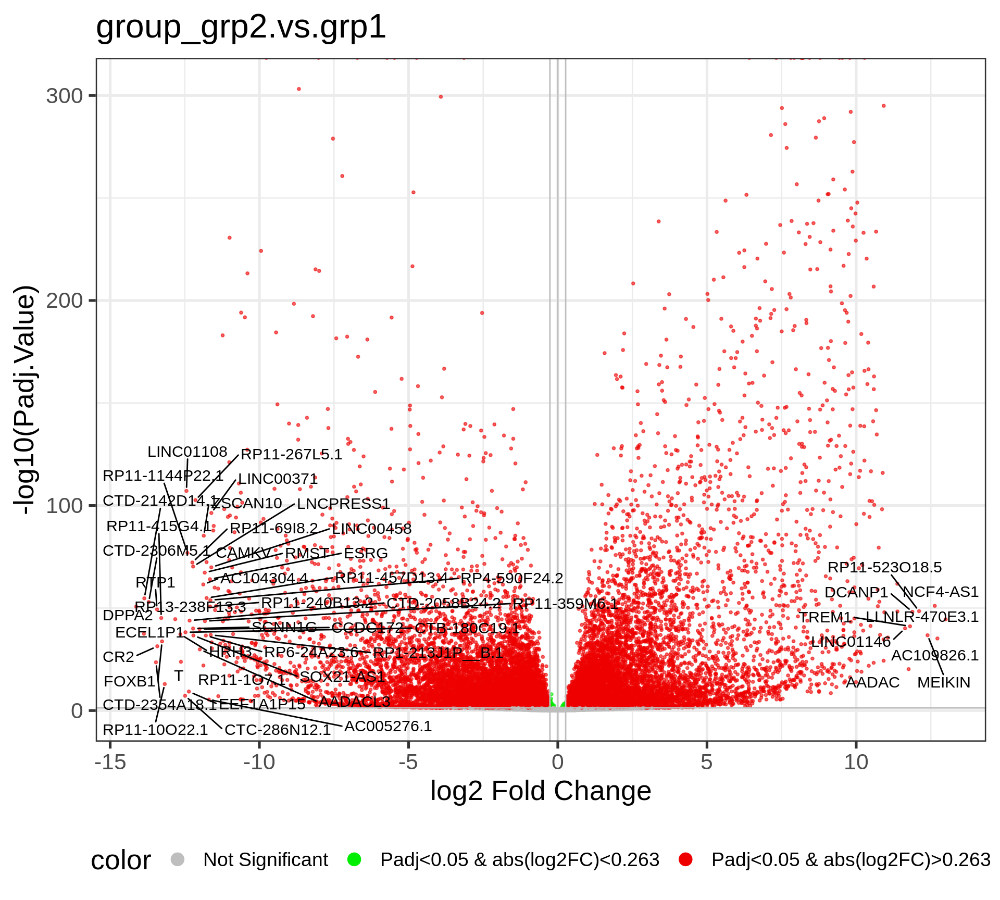

Chapter 4 Volcano plots
The Volcano plot is a useful way to display the fold change and significance of each gene in the comparison. The x-axis is the Log2 Fold change, which shows the increase and decrease of genes within the current comparison. The values that are deviated from zero mean larger expression changes. The y-axis is the -Log10(Padj.Value), and the higher value corresponds to a smaller adjusted P-value, i.e., higher significace.
This volcano plot reveals the differentially expressed genes after running the DE analysis by EArun. By default, the Fold change Cutoff is set to 1.2, and the adjusted P-value Cutoff is set to 0.05.
The Red dots are indicative of all genes that pass the Fold Change and adjusted P-value cutoff, while the Green dots are indicative of genes that only pass the adjusted P-value cutoff. The Grey dots are usually in the middle, and they are not significant genes. By default, fifty random genes are labeled for both the up-regulated and down-regulated genes.
Moreover, this chapter will display volcano plots of all comparison groups.
There is only 1 comparison in this project.
| Subsetting_group | Model | Covariate_levels | Group_name | Group_test | Group_ctrl | Analysis_method | Shrink_logFC | LFC_cutoff | |
|---|---|---|---|---|---|---|---|---|---|
| group_grp2.vs.grp1 | group | group | grp2 | grp1 | DESeq2 | Yes | 0 |
A summary of significantly changed genes in each comparison.
| Comparison | DEG | Up | Down |
|---|---|---|---|
| group_grp2.vs.grp1 | 22470 | 9855 | 12615 |
4.1 Comparison: group_grp2.vs.grp1
